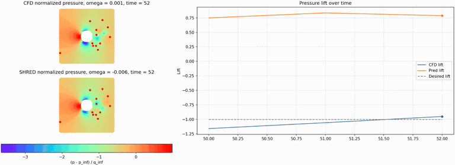
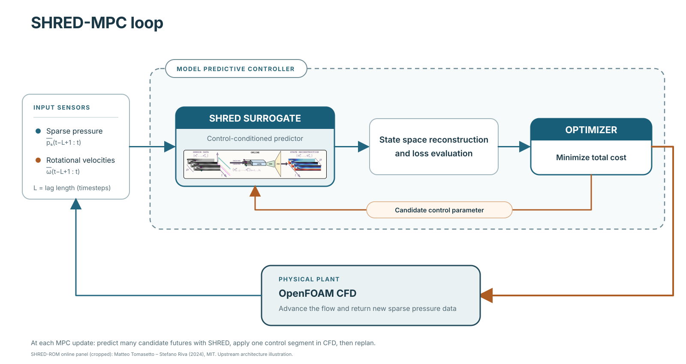
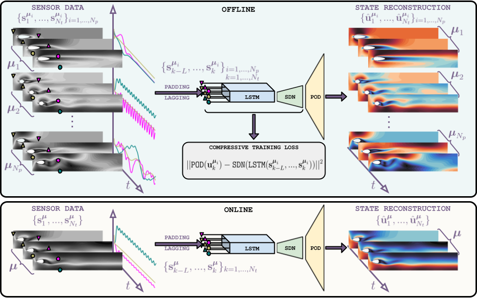
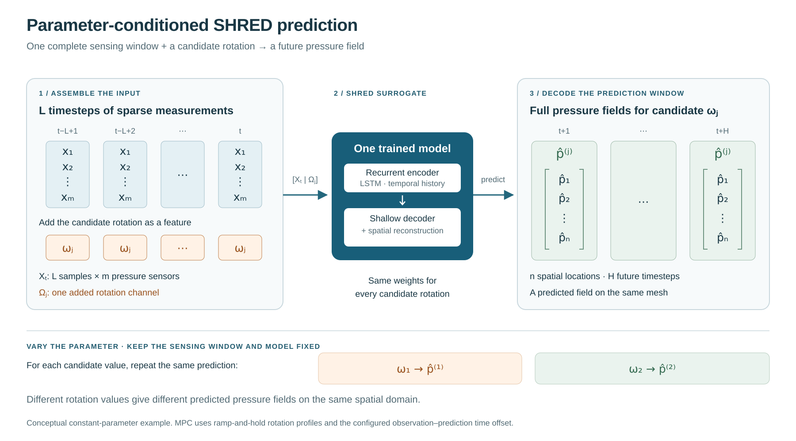

Pressure prediction
for cylinder control.

A control-conditioned Shallow Recurrent Decoder predicts flow pressure from sparse observations. Model predictive control uses those predictions to choose the cylinder’s next rotation command.
Method
From a sensing window to a control decision
Instead of reconstructing only the observed state, the pressure model pairs an earlier sensor window with a later pressure field and the corresponding rotation input. This lets the controller evaluate several possible future commands using the same observation history.



For each candidate rotation, SHRED predicts pressure and the code computes a pressure-derived lift observable. The controller balances lift tracking, oscillation and changes in rotation, applies the first part of the selected command in OpenFOAM, and updates the history before making the next decision.
The code retains the project’s pressure-lift convention and initial CFD settings. The observable is not total aerodynamic lift.
Quickstart
Three steps, using the existing scripts
From the repository root, create a Python environment and install the dependencies. The checked setup uses Python 3.12, PySHRED 1.0.21, OpenFOAM Foundation 13 and ParaView 5.11.2.
python3 -m venv .venv
source .venv/bin/activate
python -m pip install -r requirements.txt
source /opt/openfoam13/etc/bashrc
command -v blockMesh pimpleFoam foamToVTK pvpythonAdjust the OpenFOAM installation path for your machine. ParaView provides pvpython separately. A fresh internet installation has not been tested.
1. Generate the dataset
Edit shred_utils/input_var.py. The four dataset-family counts determine the total. For a small ten-simulation pilot, use:
DATASET_RAMP_CASES = 4
DATASET_RAMP_HOLD_CASES = 3
DATASET_VARIED_CASES = 2
DATASET_EXTENDED_HOLD_CASES = 1
DATASET_SEED = 42bash OpenFoam/runDataSet.sh --dry-run
bash OpenFoam/runDataSet.shThe original defaults are 200, 150, 100 and 50 cases. Keep the supplied OpenFoam/0 initial fields, mesh and dictionaries. The launcher writes the dataset to OpenFoam/CSV_files and refuses to overwrite a previous campaign. A fixed seed repeats the control histories; the exact original random histories are not included.
2. Train the pressure model
python shred_mpc_launcher.py --train-only --model models/pressureSet the epochs and device in input_var.py. Training saves the weights, fitted transforms and initialization history. For data stored elsewhere, add --dataset /absolute/path/to/CSV_files. Neither the dataset nor a pretrained model is bundled.
3. Run the lift-following MPC
python shred_mpc_launcher.py --model models/pressure --run-dir runs/lift-01The script loads the saved model and copies the initial MPC case into a fresh run directory. Set N_cycles and LIFT_TARGET_SEED in input_var.py. Use a new run name each time.
The original control loop is preserved. Initial observation/CFD alignment still needs full-run validation, and the supplied dictionaries retain steadyState. See the repository’s README and NOTES for launch details and the checks performed.
People & credits
Andrea Ingrao
Design, implementation and experimental work by Andrea Ingrao, with theoretical guidance from Matteo Tomasetto and Prof. Andrea Manzoni, in the MOX, Politecnico di Milano project context.
Built with PySHRED, OpenFOAM and ParaView. The upstream architecture illustration is credited to the SHRED-ROM project; the prediction-window diagram and demonstration come from Andrea’s original project material.